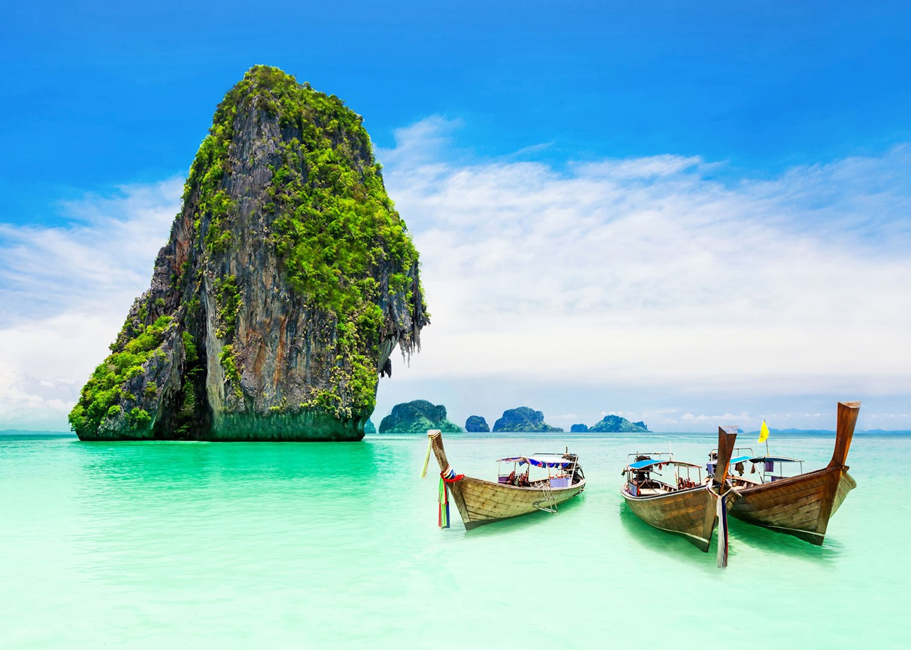

ЕГЗОТИЧНА ПОНУДА

БАНГКОК, ПУКЕТ И ТРОПСКИ ОСТРОВИ
Бангкок и Пукет, Тајланд
17.08 - 27.08
Откријте ја магијата на Тајланд преку уникатна комбинација од модерниот Бангкок, прекрасниот Пукет и тропските острови. Уживајте во егзотичните плажи, кристално чистото море, богата култура, традиционални храмови и вкусната тајландска кујна. Совршена понуда за патници кои сакаат авантура, релаксација и незаборавни искуства.
ЕГЗОТИЧНА АВАНТУРА
Енергичниот главен град на Тајланд, познат по своите величествени храмови, живописни улици, традиционални пазари и модерни градски квартови. Ќе имаме можност да ги запознаеме најпознатите знаменитости на градот, да уживаме во локалната атмосфера и да одвоиме време за шопинг и фотографирање.
Еден од најзначајните и највпечатливи комплекси во Бангкок, познат по раскошната традиционална архитектура и храмот Wat Phra Kaew. Во продолжение ќе го посетиме и Wat Arun, препознатлив по својата уникатна архитектура и прекрасната положба покрај реката Чао Праја.
Една од најпознатите тропски дестинации во Тајланд, препознатлива по прекрасните песочни плажи, тиркизното море и живописната островска атмосфера. Пукет нуди совршена комбинација од релаксација покрај морето, тропски пејзажи и можности за уживање во локалната гастрономија и вечерниот живот.
Незаборавна морска авантура низ прекрасните острови и лагуни околу Пукет, со кристално чисти води и спектакуларни тропски пејзажи. Ќе имаме можност за пливање, сноркелинг, сончање и фотографирање, додека крстарењето нуди прекрасен поглед кон островскиот рај.
Состанок со групата на аеродром во Скопје, 2 часа пред летот. Следува директен лет до Истамбул, па директен лет до Тајланд и пристигнување на аеродромот во Бангкок. По завршувањето на аеродромските процедури следува организиран трансфер до хотелот и сместување. По сместувањето следува време за одмор и освежување. Попладнето е предвидено за прва прошетка низ околината и запознавање со градот. Вечерта е слободна за вечера и индивидуални активности. Ноќевање во хотел.
Појадок во хотелот и организирано разгледување на Бангкок. Следува прошетка низ централните делови на градот и посета на познати храмови и градски знаменитости. Потоа е предвидено слободно време за ручек, кафе, шопинг и фотографирање. Во попладневните часови продолжува разгледувањето и запознавањето со локалната атмосфера. Вечерта е слободна за индивидуални активности и одмор. Ноќевање во хотел.
Појадок во хотелот и организирано тргнување кон Големата палата. Следува посета на комплексот и храмот Wat Phra Kaew, еден од најзначајните храмови во Тајланд. Потоа следува посета на Wat Arun, познат по својата впечатлива архитектура покрај реката Чао Праја. Во текот на денот е предвидено слободно време за ручек, фотографирање и индивидуално разгледување. Во попладневните часови следува враќање во хотелот. Вечерта е слободна за одмор и прошетка. Ноќевање во хотел.
Појадок и организирано заминување кон Пукет. По пристигнувањето следува сместување и време за одмор и освежување. Попладнето е предвидено за прошетка низ околината, запознавање со местото и уживање во тропската атмосфера. Патниците ќе имаат слободно време за плажа, кафе, вечера и индивидуални активности. Ноќевање во хотел.
Појадок во хотелот и организирано тргнување кон пристаништето. Следува целодневна излетничка тура со брод до тропските острови и лагуни околу Пукет. Предвидено е време за пливање, сноркелинг, сончање и фотографирање. Во текот на турата патниците ќе можат да уживаат во кристално чистото море и тропските пејзажи. По завршувањето на турата следува враќање во Пукет. Вечерта е слободна за одмор и индивидуални активности. Ноќевање во хотел.
Појадок и организирано враќање во Бангкок. По пристигнувањето следува прошетка и пловење со традиционален брод низ каналите на градот. Патниците ќе имаат можност да го запознаат локалниот начин на живот и да ги видат традиционалните населби покрај водата. Потоа следува слободно време за ручек, шопинг и индивидуално разгледување. Вечерта е слободна за прошетка и одмор. Ноќевање во хотел.
Појадок во хотелот и одјавување согласно предвиденото време. По собирањето на багажот следува организиран трансфер до аеродромот во Бангкок. По пристигнувањето на аеродромот следува пријавување за летот и завршување на потребните аеродромски процедури. Потоа следи диретен лет до Истамбул, па директен лет до Скопје. По пристигнувањето и преземањето на багажот завршува организираното патување.